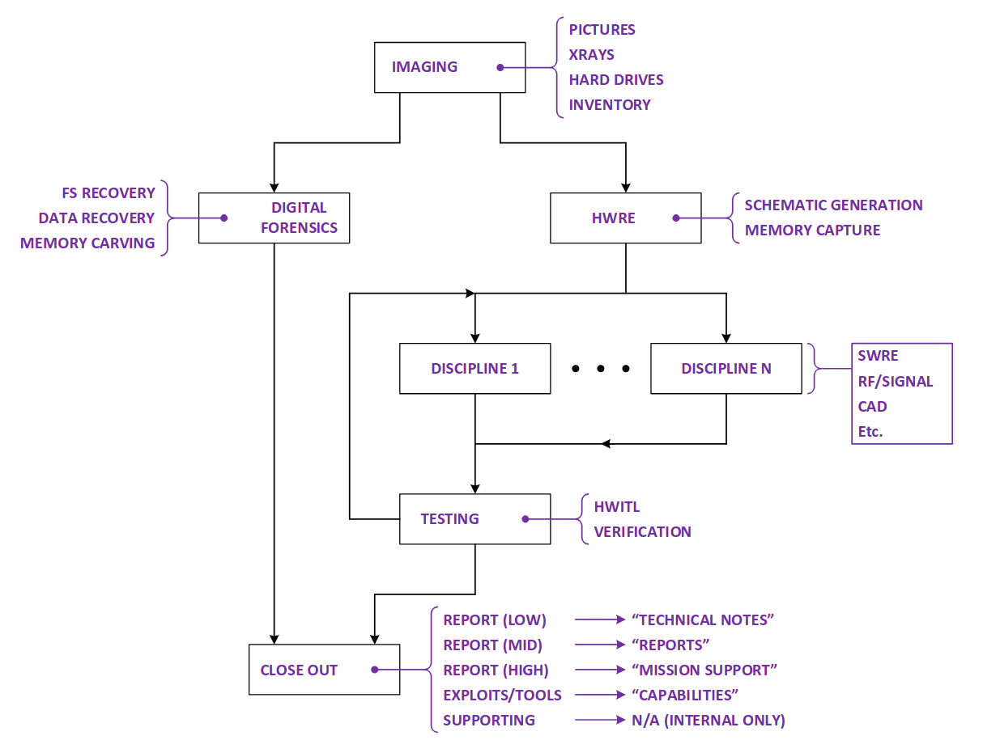

Reverse engineering is the systematic process of analyzing an existing product, system, or piece of software to understand how it works, how it was designed, and how its components interact. Rather than starting from requirements and building forward, reverse engineering works backward from the finished artifact to uncover its structure, functionality, and underlying principles. This process is commonly used in engineering, computer science, and cybersecurity to study legacy systems, improve or redesign products, ensure interoperability, or identify vulnerabilities. By deconstructing a system into its individual parts—whether hardware components, software modules, or data flows—engineers can gain insight into design decisions that may not be documented or easily observable.
The reverse engineering process typically involves several stages: observation, decomposition, analysis, and reconstruction. First, the system is observed in operation to understand its behavior and outputs. Next, it is broken down into smaller components that can be individually examined. During analysis, engineers determine how each component functions and how they communicate with one another, often creating diagrams, models, or specifications to capture this understanding. Finally, the knowledge gained is used to reconstruct the system conceptually or to develop an improved or alternative design. Overall, reverse engineering is a powerful tool for learning from existing solutions, maintaining and upgrading complex systems, and fostering innovation by building upon what already exists.
Learning how things work to stay safe.
Licence: MIT